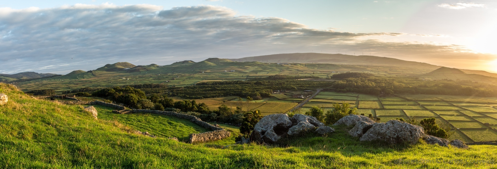

"A geografia é o mundo e tudo o que nele há."
Priscila Aranha
SOBRE MIM
CV E FORMAÇÃO
PORTFÓLIO
TRABALHOS DESENVOLVIDOS
WEBSIG
CONTATOS
Ocupação do solo (COS2018) no município de Arouca
Suscetibilidade aos incêndios rurais no município de Arouca
"Grande incêndio" de Arouca 2016